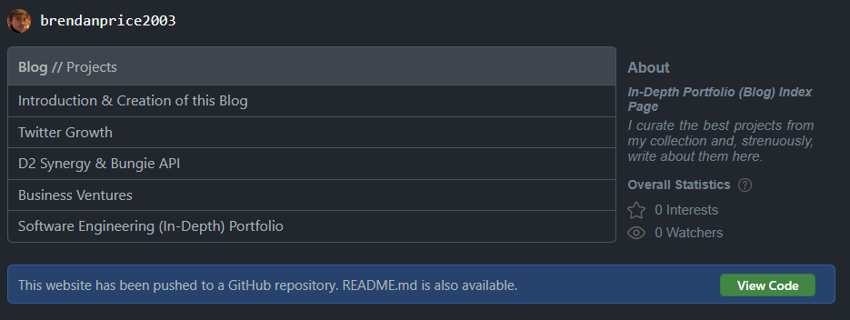
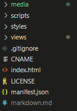

Introduction & Creation of this Blog
Contents
- Introduction
- Interactions- Navigating Pages
- Overall Statistics Interactions
- Do you really need this segment? - Creation- File Tree Structure
- Syntax Standards
- Development Techniques
Introduction
I will explain how I designed and implmented this website on all fronts: front end, back end (yes I have some back-end structures-ish). I may also include how I host this website and ensure the development environment was suitable.
In additon, this readme (should) contain all the information that you need to use this website proficiently. The below headings contain content that describe the functionality and features of the website and how to go about using each one.
Interactions
This blog contains some functionality which is almost a given on any website, otherwise the retention rate would, statistically, be very low. Lets start by explaining the most basic interaction that you can utilize.
Navigating Pages
(Below) On the entry page of the website there is a table that contains the titles of every bucket that I talk about on this blog. By clicking on one of thse titles, you guessed it, the website will navigate to the respective page.
When you are present on one of these said pages, there are various ways to navigate back to the origin. (Below) You can click on "Projects" in the header gray box, if you are on mobile you can see there is a back button, or use conventional methods such as using the browser interface or peripherals.
Overall Statistics Interactions
On all pages there will be a segment on the right hand side of, or under, the content of that page. The first two items are dedicated for those that want to confirm their interest or ensure that they are notified when a new version of the blog is available.
"Interests"
If you click this you will see, the number goes up and the star turns yellow. This is essentially the same as liking a video on YouTube, it does do anything besides count how many people click on it. Its main purpose is to give me an idea of how many people like the content that I am writing, which I can then compare against the website visits to better curate my content (I guess?).
"Watchers"
If you click on this button however, more magical things happen.
It will first prompt you that it requires your Email so it can notify you when there is a new content available on this blog. This Email is stored in my database for this blog, which is explained in below segments. Once you enter in your (correct) Email, the eye icon will change to a normal.. eye color. White and black pupil with a random color of course, fyi.
Do you really need this segment?
On any page, you can scroll all the way to the bottom, or just look at the bottom, and you can see a blue container that allows you to visit the GitHub repo. That GitHub repo contains all of the code that was implmented for the front-end solution.
Creation
In this section of the page, I will explain how I went about creating this blog from scratch. It is important to document the development period because there is a higher chance the information will be retained.
File Tree Structure
For the sake of my sanity I will publish all examples of a file tree structure as a screenshot from the VSC file explorer.
The overall tree structure (entire solution) is as follows:
(Above) I initially configured the solution to be all client-side, which means there is no server-side solution. This also means that the use of external modules becomes less likely because that would require me to use webpack or some form of environment like React.js. For this project I was just planning on developing this blog on just the basics as it doesn't require a high-tech solution.
We also have the folders: media, scripts, styles and views. Media is responsible for holding all media that is on this blog like the images (like the one above) and icons. Scripts holds what little JavaScript there is on this blog and styles holds all the .CSS files. Views is a folder that I commonly used in my projects; it holds all the .HTML files.
Syntax Standards
Having standards in your code is (quite) important because it makes your code easier to read later on and for other people that may look at your code, in the future. For this project I had standards only for the .CSS and .JS files.
One example of a .JS standard would be how I declare the variables and their naming conventions.
Development Techniques
[Text Here]